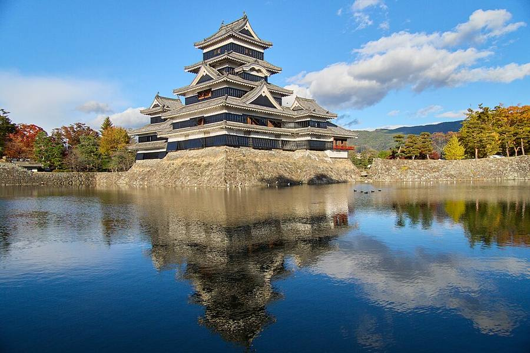
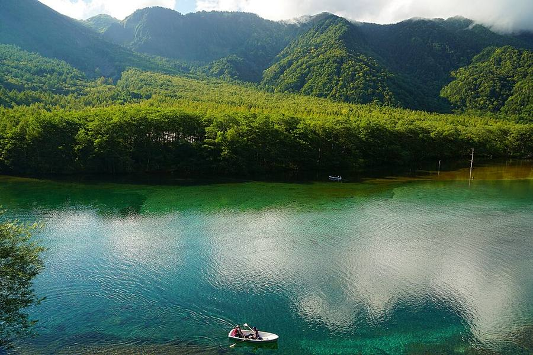
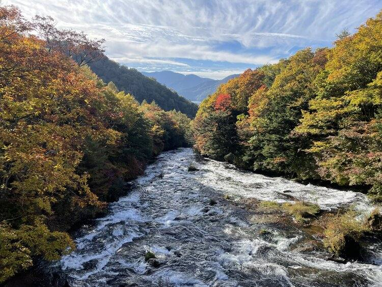
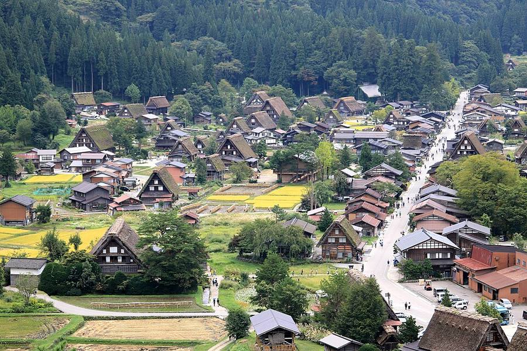
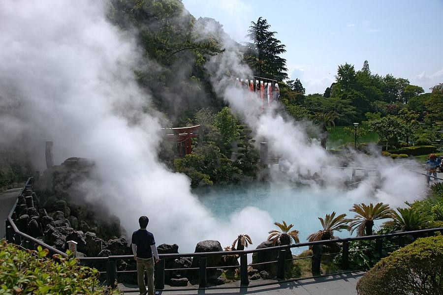
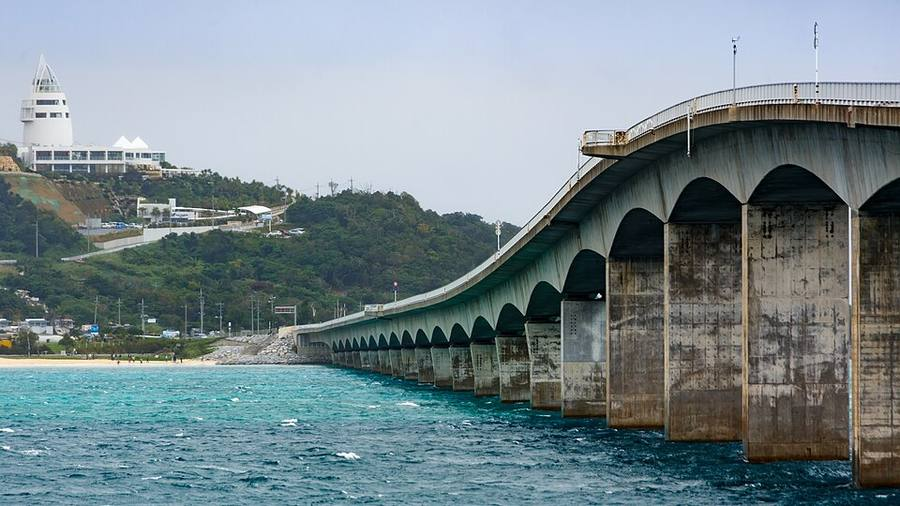

Япония после Токио: все варианты на одной странице
Часть 1 - как доехать до Kyoto к 22.10. Часть 2 - что после Kyoto. Внутри каждого варианта: дни, фото, плюсы и минусы, видео, страницы «подробнее»
Актуальный маршрут (Токио до пятницы 16.10): открыть →
Уже решено
Kyoto 22.10: шествие эпох днём, огненный фестиваль Kurama вечером
Kyoto 22.10: шествие эпох днём, огненный фестиваль Kurama вечером
Срок
выехать из Японии до 08.11 (наклейка в паспорте)
выехать из Японии до 08.11 (наклейка в паспорте)
Ждёт решения
уезжаешь из Токио в ср 14.10 или в пт 16.10
уезжаешь из Токио в ср 14.10 или в пт 16.10
Под вопросом
Web Summit Lisbon 9-12.11, Okinawa, неделя с семьёй в BCN
Web Summit Lisbon 9-12.11, Okinawa, неделя с семьёй в BCN
Как выбрать за минуту
- Уезжаешь в среду и хочешь спокойно + листву в будний день → вариант 1 (моя рекомендация).
- Уезжаешь в среду и хочешь живой фестиваль → вариант 2: Himeji, потом горы. Kamikochi тогда в субботу.
- Остаёшься до пятницы → вариант 3.
- После Kyoto: едешь на Web Summit → E1. Не едешь → E2 (гейзеры). Море (E3) - только если тянет, ты не пляжный.
Цвета = варианты: оранжевый 1, фиолетовый 2, зелёный 3; после Kyoto: синий E1, коричневый E2, голубой E3.
Часть 1. Из Токио до Kyoto 22.10
Вариант 1. Горы, выезд в среду
Самый спокойный. Kamikochi в будний день на пике листвы




- ср 14 Токио → Matsumoto (экспресс Azusa ~2 ч 30 мин), замок
- чт 15 автобус в Takayama 2 ч 33 мин, старый город
- пт 16 Kamikochi на день: будний, сухо, начало пика
- сб 17 Takayama: рынок, музеи или канатка Shin-Hotaka
- вс 18 Shirakawa-go → Kanazawa
- пн 19 Kanazawa (дождь)
- вт 20 → Kyoto ~2 ч
- ср 21 Kyoto
- чт 22 фестивали
Плюсы
листва в будний день, меньше людей; замок Matsumoto; без спешки
листва в будний день, меньше людей; замок Matsumoto; без спешки
Минусы
нет фестиваля в Himeji
нет фестиваля в Himeji
Видео
 4K映像 絶景「秋 紅葉の上高地 大正池と穂高連峰Ⅱ」日本の美しい四季 長野県松本市 10月下旬 自然風景
4K映像 絶景「秋 紅葉の上高地 大正池と穂高連峰Ⅱ」日本の美しい四季 長野県松本市 10月下旬 自然風景Yatsugatake21_4K_Japan · 27 мин
 上高地の雪と紅葉 : Snow and Autumn Leaves In Kamikochi（Nagano, Japan）
上高地の雪と紅葉 : Snow and Autumn Leaves In Kamikochi（Nagano, Japan）Anna Film Production · 23 мин
 [4K Japan] KAMIKOCHI Autumn Leaves: Kamikochi shines with snow and autumn leaves
[4K Japan] KAMIKOCHI Autumn Leaves: Kamikochi shines with snow and autumn leavesJapan Landscape Hunter · 6 мин
 Takayama - The most beautiful and Traditional Town in Japan.
Takayama - The most beautiful and Traditional Town in Japan.Ninja Walking · 14 мин
 #Takayama Japan's most beautiful traditional town | Things to do & eat | Travel
#Takayama Japan's most beautiful traditional town | Things to do & eat | Travel Sol Life · 28 мин
 Early Morning Walk through Old Town Takayama | Gifu, Japan
Early Morning Walk through Old Town Takayama | Gifu, JapanAmbient Exploration · 58 мин
Вариант 2. Фестиваль Himeji + горы, выезд в среду
Сначала «драчливый» фестиваль на западе, потом горы




- ср 14 Токио → Himeji (3 ч 14 мин), вечером повозки съезжаются в святилище
- чт 15 Nada no Kenka: столкновения паланкинов; замок Himeji
- пт 16 Himeji → Takayama (4 ч)
- сб 17 Kamikochi на день (суббота, людно)
- вс 18 Takayama утром → Shirakawa-go → Kanazawa
- пн 19 Kanazawa (дождь)
- вт 20 → Kyoto
- ср 21 Kyoto
- чт 22 фестивали
Плюсы
уникальный живой фестиваль; замок Himeji
уникальный живой фестиваль; замок Himeji
Минусы
Kamikochi в выходной; нет Matsumoto; лишний переезд запад → горы → запад; отели в Himeji в дни фестиваля не проверены
Kamikochi в выходной; нет Matsumoto; лишний переезд запад → горы → запад; отели в Himeji в дни фестиваля не проверены
Видео
 Japanese Fighting Shrine Festival - Nada Kenka Matsuri of Himeji
Japanese Fighting Shrine Festival - Nada Kenka Matsuri of HimejiRonin Dave · 18 мин
 Nada no Kenka Matsuri - Nada Fighting Festival - Himeji
Nada no Kenka Matsuri - Nada Fighting Festival - Himejiphr_9000 · 36 мин
 Walking in Himeji Festival 2014 灘のけんか祭り⑤ NADA NO KENKA MATSURI 5 本宮（境内での差し合わせ～東山
Walking in Himeji Festival 2014 灘のけんか祭り⑤ NADA NO KENKA MATSURI 5 本宮（境内での差し合わせ～東山C Ha · 14 мин
 Why Himeji is Japan's Greatest Castle
Why Himeji is Japan's Greatest CastleAbroad in Japan · 24 мин
 Himeji | Day Trip from Osaka
Himeji | Day Trip from OsakaJapan Guide · 11 мин
 SAMURAI CASTLES: Himeji—The Keep - Time and Tide
SAMURAI CASTLES: Himeji—The Keep - Time and TideNHK WORLD-JAPAN · 28 мин
Вариант 3. Токио до пятницы
Если остаёшься до пт 16.10: работа, потом в горы




- ср 14 Токио, работа
- чт 15 Токио или день в Nikko (листва наверху, около 2 ч в одну сторону)
- пт 16 после 14:00 → Takayama ~4,5 ч
- сб 17 Kamikochi на день (суббота)
- вс 18 Takayama утром → Shirakawa-go → Kanazawa
- пн 19 Kanazawa
- вт 20 → Kyoto
- ср 21 Kyoto
- чт 22 фестивали
Плюсы
меньше переездов; можно работать
меньше переездов; можно работать
Минусы
Kamikochi в субботу, людей больше; отель Mets оплачен до 14.10, на 14-16.10 нужен отель (не проверял); Nikko - почти весь день в дороге
Kamikochi в субботу, людей больше; отель Mets оплачен до 14.10, на 14-16.10 нужен отель (не проверял); Nikko - почти весь день в дороге
Видео
 日光 竜頭の滝 紅葉 散歩 Ryuzu Falls Walking Tour | Nikko Autumn leaves, Japan trip
日光 竜頭の滝 紅葉 散歩 Ryuzu Falls Walking Tour | Nikko Autumn leaves, Japan tripJapan trip amazing 散歩よいとこ · 26 мин
 COLORS OF AUTUMN | NIKKO: JAPAN'S PARADISE | 日光 | TOP 3 PLACES IN NIKKO | Autumn
COLORS OF AUTUMN | NIKKO: JAPAN'S PARADISE | 日光 | TOP 3 PLACES IN NIKKO | AutumnTraveling Doctors · 13 мин
 【Tochigi/Nikko】Lake Chuzenji Cruise Experience （Autumn Leaves, Cruise, Ryuzu Fal
【Tochigi/Nikko】Lake Chuzenji Cruise Experience （Autumn Leaves, Cruise, Ryuzu FalJapan Panoramic Tours CHANNEL · 10 мин
Часть 2. После Kyoto 22.10
Выбор зависит от Web Summit: едешь - E1, нет - E2, к любому можно добавить море E3, если успеваешь до 08.11.
E1. С Web Summit
Коротко: Osaka и домой


- 23-25 Osaka: еда, улицы, замок
- ~26-27 вылет с остановкой: Osaka → Dubai 11 ч 20 мин, потом Dubai → Barcelona 7 ч 35 мин
- ~29-30 Barcelona, неделя с семьёй
- 9-12.11 Web Summit, Lisbon
Плюсы
всё влезает, есть неделя с семьёй
всё влезает, есть неделя с семьёй
Минусы
нет гейзеров и моря
нет гейзеров и моря
Видео


E2. Гейзеры
Osaka → Hiroshima → Beppu → Fukuoka → домой




- 23-25 Osaka
- 26 Hiroshima и Miyajima
- 27-28 Beppu: семь «адов» и гейзер (из Hiroshima 2 ч 08 мин), утро в Yufuin
- 29-31 Fukuoka (из Beppu 1 ч 54 мин), спокойные дни с работой
- ~1-3.11 вылет с остановкой, Barcelona ~4-6.11
Плюсы
гейзеры как следует, по пути
гейзеры как следует, по пути
Минусы
домой ~4-6.11: Web Summit впритык или мимо
домой ~4-6.11: Web Summit впритык или мимо
Видео
 Beppu Hell Tour perfect guide 7 hells! Prices? Famous food? Efficient direction?
Beppu Hell Tour perfect guide 7 hells! Prices? Famous food? Efficient direction?NihonMura · 18 мин
 Beppu "Jigoku Meguri" 8 Hells Tour, Oita | Japan Travel Guide
Beppu "Jigoku Meguri" 8 Hells Tour, Oita | Japan Travel GuideJapanTravel · 2 мин
 🇯🇵 Japan Tour - Beppu Seven Hells: JIGOKU MEGURI
🇯🇵 Japan Tour - Beppu Seven Hells: JIGOKU MEGURIInternational Rambler · 26 мин
 Miyajima Island Guide – The Perfect Day Trip From Hiroshima
Miyajima Island Guide – The Perfect Day Trip From HiroshimaThe Navigatio Japan · 11 мин
 THE Hiroshima Guide: ESSENTIAL Spots For Your Trip!
THE Hiroshima Guide: ESSENTIAL Spots For Your Trip!PiQtour Japan · 41 мин
E3. Море
Osaka → самолёт на Okinawa → домой



- 23-24 Osaka
- 25+ Okinawa: острова Kerama на скоростном судне 50 мин
- до 08.11 вылет из Японии
Плюсы
тёплое море (+29 в воде по прошлому году)
тёплое море (+29 в воде по прошлому году)
Минусы
Web Summit почти не влезает; на главном острове без машины неудобно
Web Summit почти не влезает; на главном острове без машины неудобно
Видео


_24_Oct,_2011_-_panoramio.jpg){kind=link}


_in_Kenrokuen_garden,_Kanazawa,_Japan_(2621640037).jpg){kind=link}


.jpg){kind=link}

.jpg){kind=link}
.jpg){kind=link}

.jpg){kind=link}


Погода по дням
Прогноз Open-Meteo, 13.10 в 13:15 по Токио. День/ночь, °C. 🌧 = дождь от 5 мм. Таблица листается вбок.
| ср 14 | чт 15 | пт 16 | сб 17 | вс 18 | пн 19 | вт 20 | ср 21 | чт 22 | пт 23 | сб 24 | вс 25 | пн 26 | вт 27 | ср 28 | |
|---|---|---|---|---|---|---|---|---|---|---|---|---|---|---|---|
| Himeji | 26/16 | 23/14 | 23/11 | 25/14 | 25/13 | 27/22 | 22/17 🌧 | 20/14 | 19/14 | 20/14 | 21/12 | 21/11 | 21/14 🌧 | 22/14 | 19/14 |
| Matsumoto | 23/14 | 21/11 | 21/9 | 19/11 | 24/9 | 23/15 | 20/16 🌧 | 16/9 | 13/9 | 11/8 🌧 | 17/7 | 16/8 | 18/9 | 19/9 | 13/9 🌧 |
| Takayama | 21/12 🌧 | 19/9 | 22/6 | 20/7 | 22/6 | 20/12 🌧 | 19/15 🌧 | 16/10 | 14/10 | 11/10 🌧 | 18/9 | 18/10 | 16/10 🌧 | 17/8 🌧 | 10/7 🌧 |
| Kamikochi | 13/5 🌧 | 12/3 | 17/3 | 15/5 | 19/5 | 17/8 🌧 | 13/10 🌧 | 13/5 🌧 | 8/4 | 5/3 🌧 | 12/3 | 13/3 | 11/4 🌧 | 12/3 🌧 | 5/0 |
| Kanazawa | 24/17 🌧 | 21/15 | 21/10 | 21/15 | 24/10 | 26/19 🌧 | 20/19 | 20/14 🌧 | 17/14 | 17/14 | 19/14 | 19/13 | 20/13 🌧 | 19/14 🌧 | 17/14 🌧 |
| Kyoto | 25/17 🌧 | 23/15 | 25/11 | 25/13 | 26/13 | 27/20 | 25/17 🌧 | 20/14 | 19/14 | 20/15 | 22/13 | 22/12 | 20/14 🌧 | 22/12 | 18/15 |
| Osaka | 25/18 | 23/15 | 23/13 | 25/15 | 28/14 | 28/21 | 24/19 🌧 | 21/15 🌧 | 20/15 | 21/15 | 19/14 | 21/13 | 20/14 🌧 | 21/14 | 20/16 |
| Hiroshima | 23/15 | 23/13 | 21/11 | 26/12 | 24/12 | 24/20 | 21/17 | 22/14 | 20/13 | 19/12 | 22/10 | 20/11 | 23/14 🌧 | 21/13 | 19/14 |
| Beppu | 22/16 | 20/16 | 21/16 | 22/16 | 27/16 | 24/17 | 21/18 | 20/13 | 20/12 | 18/12 | 23/12 | 19/13 | 21/15 🌧 | 22/14 | 18/11 |
| Naha | 28/24 | 27/23 | 28/24 | 28/25 | 29/26 | 29/26 | 29/25 | 27/24 | 26/23 | 26/23 | 27/23 | 26/23 | 25/22 | 25/21 | 26/20 |
| Nikko | 16/8 | 13/7 | 16/6 | 13/7 | 13/6 | 18/8 | 14/12 🌧 | 13/6 | 8/3 | 6/4 🌧 | 11/5 | 11/5 | 10/6 🌧 | 13/5 | 5/2 🌧 |
| Tokyo | 24/19 | 23/18 | 25/17 | 23/17 | 24/14 | 27/21 | 27/21 | 26/17 | 16/12 🌧 | 16/12 🌧 | 21/15 | 21/14 | 20/15 | 23/14 🌧 | 20/13 |
- Горы 15-18.10 сухо: в Kamikochi днём +12…+19. Это окно для Kamikochi.
- Дождь: Kanazawa пн 19.10 (около 42 мм), Kamikochi вт 20.10.
- Kyoto 22.10: сухо, +19.
- Прогноз дальше недели скачет. Ночью он давал сильный дождь 23-24.10 в Kyoto и Osaka, днём этот дождь сдвинулся на Токио, Nikko и горы. Ближе к датам проверю ещё раз.
Где меньше людей
- Выходные: 17-18.10, 24-25.10, 31.10-1.11. Праздник: вт 03.11.
- Kamikochi: пик листвы 14-28.10. Японский блог tabibei (оценка автора, не данные о посетителях) считает самыми людными вс 18.10, 24-25.10 и 31.10-1.11, лучшими - чт 15 и пт 16.10.
- Kyoto 22.10: на шествии и особенно в Kurama будет очень людно.
Всё остальное
Срез 13.10.2026. Поезда: Yahoo!乗換案内 (запросы 13.10 на 14-16.10 и 26.10). Погода: Open-Meteo, прогноз 13.10 в 13:15 по Токио. Фестиваль Nada: туристические гиды, префектура Hyogo, Kobe Shimbun; официальный сайт по одному гиду nadamatsuri.jp, по другому его нет - уточнять в турбюро Himeji 079-222-2285. Видео: YouTube (поиск 13.10, отобраны по теме и просмотрам). Фото: Wikimedia Commons, автор и лицензия под каждым.